정보처리기능사 (2005-04-03 기출문제)
1과목: 전자 계산기 일반
1. 연산작업을 할 때, 연산의 중간 결과나 데이터 저장시 레지스터를 사용하는 주된 이유는?
- 인터럽트 요청을 방지하기 위하여
- 연산 속도 향상을 위하여
- 기억 장소를 절약하기 위하여
- 연산의 정확성을 위하여
(정답률: 78%)

2. 반가산기(Half-Adder)에서 두 개의 입력 비트가 모두 1일 때 합(Sum)은?
- 0
- 1
- 10
- 11
(정답률: 59%)
3. 컴퓨터에 의하여 다음에 실행될 명령어의 주소가 저장되어 있는 기억 장소는?
- 프로그램 카운터(Program Counter)
- 메모리 레지스터(Memory Register)
- 명령어 레지스터(Instruction Register)
- 인덱스 레지스터(Index Register)
(정답률: 62%)
4. CPU 에서 명령이 실행되는 순서를 제어하거나 특정 프로그램에 관련된 컴퓨터 시스템의 상태를 나타내고 유지하기 위한 제어 워드로서, 실행중인 CPU의 상황을 나타내는 것은?
- PSW
- MBR
- MAR
- PC
(정답률: 78%)
5. 명령어는 연산자 부분과 주소 부분으로 구성되는데 주소(Operand)부분의 구성 요소가 아닌 것은?
- 데이터의 주소자체
- 명령어 순서
- 데이터 종류
- 데이터가 있는 주소를 구하는데 필요한 정보
(정답률: 47%)
6. 디스크 팩이 6장으로 구성되었을 때 사용하여 기록할 수 있는 면 수는?
- 6
- 8
- 10
- 12
(정답률: 77%)
7. 연산자의 기능과 거리가 먼 것은?
- 주소지정 기능
- 제어 기능
- 함수연산 기능
- 입출력 기능
(정답률: 62%)
8. 진리표가 다음 표와 같이 되는 논리회로는?
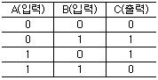
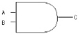
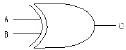
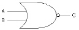
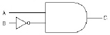
(정답률: 75%)
9. 번지(Address)로 지정된 저장위치(Storage Location)의 내용이 실제의 번지가 되는 주소지정번지는?
- 간접지정번지
- 완전지정번지
- 절대지정번지
- 상대지정번지
(정답률: 51%)
10. 2진수 0.1101을 10진수로 변환하면?
- 0.8125
- 0.875
- 0.9375
- 0.975
(정답률: 45%)
11. 0-주소 명령은 연산시 어떤 자료 구조를 이용하는가?
- STACK
- TREE
- QUEUE
- DEQUE
(정답률: 88%)
12. 이항(Binary) 연산에 해당하는 것은?
- COMPLEMENT
- AND
- ROTATE
- SHIFT
(정답률: 78%)
13. 채널(Channel)은 어느 곳에 위치하는가?
- 주기억장치와 CPU의 중간에 위치한다.
- 연산장치와 레지스터 중간에 위치한다.
- 주기억장치와 입·출력장치의 중간에 위치한다.
- 주기억장치와 보조기억장치의 양쪽에 위치한다.
(정답률: 67%)
14. “NOR”회로에 대하여 바르게 설명된 것은?
- “OR”회로와 “NOT”회로의 분리회로
- “AND”회로와 “NOT”회로의 연결회로
- “OR”회로와 “NOT”회로의 결합회로
- “YES”회로와 “NO”회로의 결합회로
(정답률: 75%)
15. 4매로 이루어진 디스크 팩에서 1면에 200개의 트랙을 사용할 수 있다고 할 때, 이 디스크팩의 사용 가능한 실린더는 모두 몇 개인가?
- 100
- 200
- 400
- 800
(정답률: 48%)
16. 논리적 연산의 종류에 해당되지 않는 것은?
- AND
- OR
- Rotate
- ADD
(정답률: 62%)
17. 기억장치의 종류에 해당되지 않는 메모리(Memory)는?
- ROM
- RAM
- REM
- EPROM
(정답률: 64%)
18. 다음 보기의 기호에 맞는 불(Boolean) 대수식은?
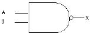
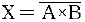
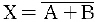
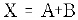
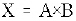
(정답률: 66%)
19. 다음 중 플립플롭의 종류가 아닌 것은?
- R-S
- J-K
- D
- R
(정답률: 75%)
20. 8개의 bit로 표현 가능한 정보의 최대 가지수는?
- 255
- 256
- 257
- 258
(정답률: 85%)
2과목: 패키지 활용
21. INSA(SNO, NAME) 테이블에서 SNO가 100인 튜플을 삭제하는 SQL 문은?
- DELETE FROM INSA WHERE SNO = 100 ;
- REMOVE FROM INSA WHERE SNO = 100 ;
- DROP TABLE INSA WHERE SNO = 100 ;
- DESTROY INSA WHERE SNO = 100 ;
(정답률: 63%)
22. 아래 보기에서 설명하는 내용과 가장 가까운 데이터베이스는?
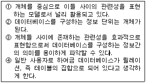
- 네트워크형 데이터베이스
- 계층형 데이터베이스
- 관계형 데이터베이스
- 객체 지향 데이터베이스
(정답률: 52%)
23. SQL 문의 형식 중 옳지 않은 것은?
- INSERT - SET - WHERE
- UPDATE - SET - WHERE
- DELETE - FROM - WHERE
- SELECT - FROM - WHERE
(정답률: 67%)
24. SQL에서 조건문을 기술할 수 있는 구문은?
- LIKE
- WHERE
- SELECT
- FROM
(정답률: 53%)
25. 테이블 구조를 변경하는데 사용하는 SQL 명령은?
- ALTER TABLE
- CREATE TABLE
- DROP TABLE
- CREATE INDEX
(정답률: 75%)
26. 데이터베이스를 활용하는 업무처리 프로그램의 개발시 개발 순서로 바른 것은?
- 설계 - 업무분석 - 프로그램 개발 - 테스트 - 운용 및 보수유지
- 프로그램 개발 - 설계 - 운용 및 보수유지 - 테스트 - 업무분석
- 설계 - 업무분석 - 프로그램 개발 - 운용 및 보수유지 - 테스트
- 업무분석 - 설계 - 프로그램 개발 - 테스트 - 운용 및 보수유지
(정답률: 45%)
27. 전자 회계장부라고 불리 우는 표 계산 프로그램을 의미하는 것은?
- Spread Sheet
- Presentation
- Word Processor
- CAD Program
(정답률: 64%)
28. 데이터베이스를 사용하는 경우의 장점이 아닌 것은?
- 데이터 중복의 최대화
- 데이터의 무결성 유지
- 데이터의 공용 사용
- 데이터의 일관성 유지
(정답률: 80%)
29. 데이터베이스 구조를 3단계의 스키마로 나눌 경우 포함되지 않는 것은?
- 외부 스키마
- 개념 스키마
- 논리 스키마
- 내부 스키마
(정답률: 82%)
30. 프레젠테이션 프로그램을 사용하는 용도 중 가장 거리가 먼 것은?
- 회사의 제품 선전용
- 통계자료 작성
- 신제품 설명회
- 강연회 준비
(정답률: 81%)
3과목: PC 운영 체제
31. 아래 내용이 설명하는 Windows 98의 기능은?
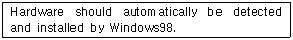
- PnP(Plug and Play)
- Drag and Drop
- OLE(Object Linking and Embedding)
- DMA(Direct Memory Access)
(정답률: 69%)
32. 도스(MS-DOS)에서 Ctrl + Alt + Del 키를 눌러 재부팅 하였다. 이러한 재부팅 방법을 무엇이라 하는가?
- 콜드 부팅 (Cold Booting)
- 웜 부팅 (Warm Booting)
- 하드 부팅 (Hard Booting)
- 핫 부팅 (Hot Booting)
(정답률: 71%)
33. 운영체제의 구성 요소 중 프로세스를 생성, 실행, 중단, 소멸 시키는 것은?
- 스케줄러(Scheduler)
- 드라이버(Driver)
- 에디터(Editor)
- 스풀러(Spooler)
(정답률: 67%)
34. Windows 98의 시스템 도구 중 디스크의 손상된 부분을 점검하여 복구해 주는 것은?
- 디스크 검사
- 디스크 조각 모음
- 디스크 공간 늘임
- 디스크 압축
(정답률: 56%)
35. Windows 98의 클립보드에 대한 설명으로 옳지 않은 것은?
- 윈도에서 자료를 일시적으로 보관하는 장소를 제공한다
- 선택된 대상을 클립보드에 오려두기를 할 때 사용되는 단축키는 Ctrl + V 이다.
- 가장 최근에 저장된 파일 하나만을 저장할 수 있다.
- 클립보드에 현재화면 전체를 복사하는 기능 키는 Print Screen이다.
(정답률: 74%)
36. Unix에서 태스크 스케줄링(Task-Scheduling) 및 기억장치 관리(Memory Management) 등의 일을 수행하는 부분은?
- Kernel
- Shell
- Utility Program
- Application Program
(정답률: 58%)
37. Windows 98에서 파일의 목록을 보는 방법으로서 적당하지 않은 것은?
- “내 컴퓨터”를 이용하여 파일의 목록을 볼 수 있다.
- “탐색기”를 이용하여 파일의 목록을 볼 수 있다.
- “파일관리자”를 이용하여 파일의 목록을 볼 수 있다.
- “작업표시줄”을 이용하여 파일의 목록을 볼 수 있다.
(정답률: 57%)
38. 하드 디스크의 분할을 설정하고 논리적 드라이브 번호를 할당하는 DOS의 외부명령어는?
- FDISK
- CHKDSK
- RECOVER
- DISKCOMP
(정답률: 69%)
39. Windows 98의 특징으로 거리가 먼 것은?
- 16비트 운영체제이다.
- Plug and Play 기능을 지원한다.
- 인터넷 접속 기능이 있다.
- 멀티 태스킹을 제공한다.
(정답률: 77%)
40. 도스(MS-DOS)에서 파일의 이름을 알파벳 순으로 표시하는 명령어는?
- DIR/ON
- DIR/OS
- DIR/OA
- DIR/OD
(정답률: 57%)
41. Which is not outer command at DOS?
- CHKDSK
- DISKCOPY
- PROMPT
- SYS
(정답률: 28%)
42. 업무처리를 실시간 시스템(Real-Time System)으로 처리할 필요가 없는 것은?
- 적의 공중 공격에 대비하여 동시에 여러 지점을 감시하는 시스템
- 가솔린 정련에서 온도가 너무 높이 올라가는 경우 폭발을 방지하기 위해 조치를 취하는 시스템
- 고객명단 자료를 월 단위로 묶어 처리하는 시스템
- 교통 관리, 비행조정 등과 같은 외부 상태에 대한 신속한 제어를 목적으로 하는 시스템
(정답률: 76%)
43. UNIX에서 입력시 사용되는 “Kill” 명령에 대한 설명으로 옳은 것은?
- 마지막에 입력한 문자를 지운다.
- 마지막에 입력한 단어를 지운다.
- 한줄 전체를 지운다.
- 새 줄의 입력을 위하여 한줄을 띄운다.
(정답률: 72%)
44. Windows 98에서 C 드라이브의 하드디스크 용량을 알고자 할 때, 옳지 않은 것은?
- “제어판”의 시스템 아이콘을 클릭한다.
- “MS-DOS”로 들어가 CHKDSK를 실행한다.
- “내 컴퓨터”의 C 드라이브 등록정보를 찾는다.
- “Windows 탐색기”의 C 드라이브 등록정보를 찾는다.
(정답률: 35%)
45. Windows 98에서 바탕화면에 있는 아이콘을 정렬하려고 할 때 기본적으로 제공하는 아이콘 정렬 방식이 아닌 것은?
- 계단식 정렬
- 크기별 정렬
- 자동 정렬
- 종류별 정렬
(정답률: 73%)
46. UNIX 시스템에서 명령어 해석기에 해당하는 것은?
- 셸(Shell)
- 커널(Kernel)
- 유틸리티(Utility)
- 응용 프로그램(Application Program)
(정답률: 50%)
47. 시스템의 날짜를 변경하거나, 확인할 수 있는 DOS 명령어는?
- TIME
- DATE
- MD
- DEL
(정답률: 74%)
48. Windows 98에서 화면보호기의 설정은 어디에서 하는가?
- 시스템
- 멀티미디어
- 디스플레이
- 내게 필요한 옵션
(정답률: 69%)
49. Windows 98의 “제어판”에서 할 수 없는 작업은?
- 마우스 환경설정
- 시스템 날짜 변경
- 그림 작성 및 수정
- 프로그램 추가 및 삭제
(정답률: 66%)
50. 작업 수행 중 예기치 못한 돌발적인 사태가 발생하여 잠시 작업 수행을 멈추고 상황에 맞는 처리를 한 후, 다시 프로그램을 진행해 나가는 것을 의미하는 것은?
- 스풀링
- 인터럽트
- 폴링
- 버퍼링
(정답률: 54%)
4과목: 정보 통신 일반
51. 우리나라의 무궁화위성과 같은 정지형 통신위성의 위치를 가장 적합하게 나타낸 것은?
- 지상으로부터 약 15,000[km]
- 지구의 북회귀선상으로부터 약 25,000[km]
- 지구 적도 상공 약 36,000[km]
- 지구 극점으로부터 약 45,000[km]
(정답률: 69%)
52. 위상이 일정하고 진폭이 0[V]와 5[V] 2가지 변화로써 신호를 1200보오[Baud]의 속도로 전송할 때 매초당 비트수[bps]는?
- 1200
- 2400
- 4800
- 9600
(정답률: 32%)
53. 광의 전반사와 관련하여 코어와 클래드의 굴절 계수 크기는?
- 클래드의 굴절 계수가 코어쪽 보다 더 크다.
- 코어의 굴절 계수가 클래드쪽 보다 더 크다.
- 코어와 클래드의 굴절 계수는 같다.
- 광상태에 따라 다르다.
(정답률: 44%)
54. 주파수분할 멀티플렉스(FDM)에 대한 설명으로 옳지 않은 것은?
- 진폭편이 변조방식만을 사용
- 시분할 멀티플렉스에 비해 비교적 간단한 구조
- 재생증폭기는 전체 채널에 하나만 필요
- 진폭 등화를 동시에 수행
(정답률: 24%)
55. 다음 중 변복조 장치를 구분하는데 가장 적합한 방식은?
- 직렬 변복조 장치와 병렬 변복조 장치
- 2선 변복조 장치와 4선 변복조 장치
- 비동기식 변복조 장치와 동기식 변복조 장치
- Half-Duplex 변복조 장치와 Full-Duplex 변복조 장치
(정답률: 44%)
56. 다음 중 정보통신 관련 프로토콜에 해당되지 않는 것은?
- EBCDIC
- BSC
- SDLC
- HDLC
(정답률: 44%)
57. 정보통신회선을 멀티포인트(multipoint)로 구성할 때의 특성 설명으로 적합하지 않는 것은?
- 회선경비가 증가한다.
- 제어 소프트웨어가 간단하다.
- 포트수가 증가한다.
- 변복조기의 대수가 증가한다.
(정답률: 44%)
58. 정보통신 교환망에 해당되지 않는 것은?
- 회선 교환망
- 메시지 교환망
- 패킷 교환망
- 방송통신 교환망
(정답률: 52%)
59. 다음 중 통신신호세기의 레벨을 나타내는 단위로 적합한 것은?
- 헤르츠[Hz]
- 데시벨[㏈]
- 비피에스[bps]
- 보오[Baud]
(정답률: 32%)
60. 에러를 검출후 재전송(ARQ)하는 방식에 요구되는 사항으로 가장 적합하지 않은 것은?
- 에러 검출 방식은 반드시 패리티 검사 코드를 이용한다.
- 역채널이 존재하여야 한다.
- 수신 블럭에 에러가 있으면 인터럽트(Interrupt)를 할 수 있어야 한다.
- 전송중인 메세지를 가지고 있을 버퍼기억 장치가 필요하다.
(정답률: 34%)